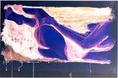

Angela
Black
Professor
I wish I was an old professor.
So I could dream of nuzzling warm soft bellies
with my graying beard.
And take hot showers alone,
think of my wife now dead 15 years,
perhaps in a car crash,
of how young and pretty she was.
So everyday I smell her in the students of my class.
I would have a study in my house
with dead animals on the walls
and papers scattered all over the desk,
all over the floor,
books I wrote lining the ceiling.
And there would be the picture of my trip to Mexico
sitting in the corner of my desk;
black and white buddies with raised arms,
holding black and white tequila.
I would argue Thoreau with my colleagues,
and spill wisdom and dirt into the undergraduates.
I would look at the girl who came for tutoring,
rather I would look at her tits,
and want her silently.
I wish I was an old professor.
So everyday I can come home
after an exhausting day of quoting this or that author,
this or that corpse,
this or that painful reminder.
And I'll sit in my dust remembering
some dissolved grandeur of love,
and cry my wisdom to sleep.
|

(Michael Patterson) |
{kind=link}